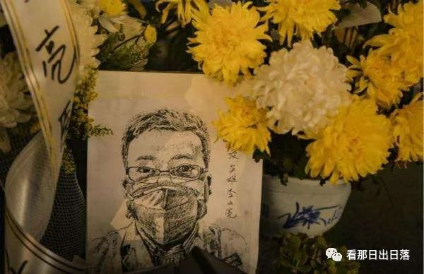

8. Wailing Wall
Li Wenliang, an ophthalmologist in the Chinese city of Wuhan, the “whistle-blower” to the pandemic outbreak, died of the coronavirus on Feb. 6 at the age of 34.
More than a month before that, he went online to warn friends of the strange and deadly virus rampaging through his hospital, only to be threatened by government authorities.
He became a hero in China when his warnings proved true, then a martyr when he died.
After his passing, people began to gather, virtually, at his last post on Weibo, the Chinese social media platform. In the comments section, they grieve, seek solace,
and write down their stories, feelings, and thoughts.
Now, with more than 300,000 comments, his last post has become an archive of public memory, or a national diary about the pandemic and the Zero-Covid policy.
It chronicles our hidden realities from the very beginning. It is a sanctuary for traumatized people. It is a place where some truths are preserved.
Also, some call it China's Wailing Wall, a reference to the Western Wall in Jerusalem, where people leave written prayers in the cracks.
Reference: Yuan, L.Y. (2020, April 13). How Thousands in China Gently Mourn a Coronavirus Whistle-Blower. New York Times,
The New New World, Retrieved from https://www.nytimes.com/interactive/2020/04/13/technology/coronavirus-doctor-whistleblower-weibo.html)


Doctor Li Wenliang